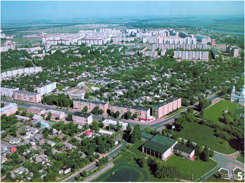
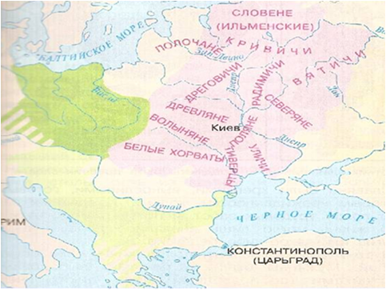
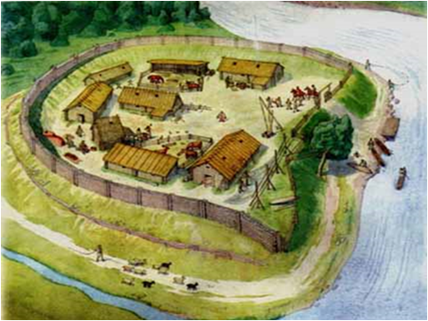
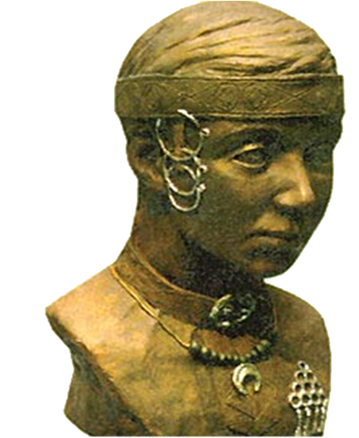
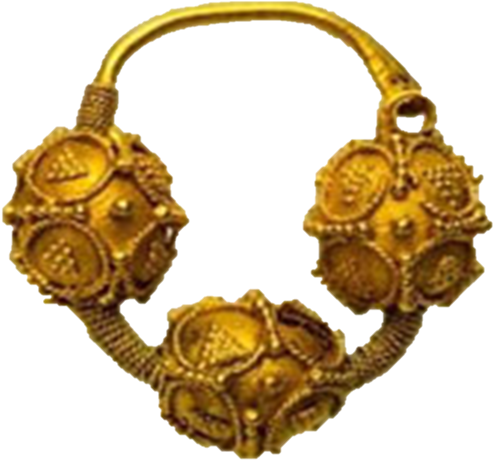
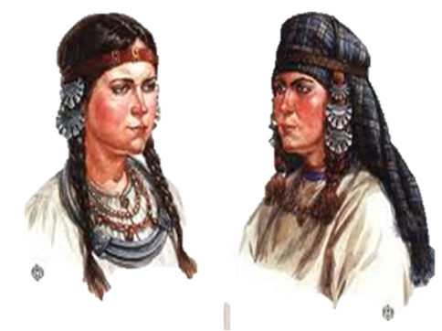
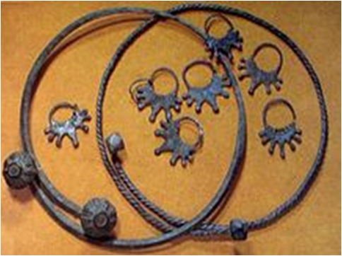

Жлобин через века

С высоты птичьего полета Жлобин выглядит достаточно большим. Но начинался он с небольшого поселения славян.
Племена Жлобина
На территории современного Жлобина и Жлобинского района в раннем средневековье расселились восточнославянские племена, преимущественно дреговичи. Эта территория находилась в северной части их племенных земель, которые простирались между реками Припять и Днепр. Соседями дреговичей в этом регионе были радимичи, жившие восточнее. Археологические находки на территории района — курганы и городища — подтверждают присутствие здесь именно дреговичей в IX–XI веках. Позже эти земли вошли в состав Древнерусского государства, а затем — Полоцкого и Туровского княжеств.

Славянский город

Славянское городище на территории современного Жлобинского района
представляло собой хорошо укреплённое поселение, идеально приспособленное
к местным природным условиям.
Его безопасность обеспечивалась как мудро использованными природными факторами,
так и искусственными оборонительными сооружениями.
Городище обычно располагалось на высоком берегу реки — Днепра или его притоков.
Крутые склоны холма создавали естественную преграду для потенциальных нападающих,
а с речной стороны подход к поселению дополнительно затруднялся обрывистым берегом
и водной преградой. Часто поселение окружалось глубокими оврагами или болотистой
местностью, что делало его практически неприступным с нескольких сторон.
Рукотворные укрепления дополняли природную защиту. По периметру городища возводились
высокие земляные валы, на которых устанавливались мощные деревянные стены-частоколы
из заострённых брёвен. Перед валом выкапывался глубокий ров, иногда заполняемый водой.
На самых уязвимых участках строили сторожевые башни, откуда велось наблюдение за
окружающей местностью.
Такое сочетание искусственных укреплений и
выгодного расположения делало городище надёжным укрытием,
где славяне могли безопасно жить, заниматься ремёслами и земледелием,
защищая свои семьи и имущество от внешних угроз.
Украшение женщин племен
Украшение женщин Дреговичей


Украшение женщин Радимичей


Легенда о Жлобине
Давным-давно на побережье Днепра жили работящие люди. Они занима- лись охотой, ловили рыбу, сеяли хлеб. Проходили года и века. Однажды с гнилого болота вылез 12-головый змей и сказал: – Теперь вы будете мне отдавать по человеку на завтрак и на обед. Не успели опомниться люди от страха, как он схватил самую красивую женщину и исчез в болоте.
Затужили все жители этого поселения. А молодой богатырь Петрик, чью жену унес змей, всю ночь рыдал над колыбелью маленького сына и думал, как отомстить проклятому людоеду. Утром снова появился змей и заревел: – Кого вы отдаете мне на завтрак?
Навстречу змею вышел богатырь Петрик и одним ударом снес голову лю- доеду. День и ночь продолжался бой Петрика со змеем, и богатырь одержал по- беду. От тяжелых ран Петрик умер. Люди похоронили богатыря на берегу Днепра и поставили на могиле большой дубовый крест.
Однажды в это селение заехал молодой князь со своей дружиной. Проез- жая мимо могилы Петрика, князь спросил: – Кто здесь похоронен? Люди рассказали о бесстрашном подвиге богатыря. Князь низко поклонил- ся могиле и сказал: – На этом месте будет замок. Чудесный замок построил князь со своей дружиной на правом берегу Днепра. В то время люди переправляли груз по реке на плотах. А в этом месте, где стоял замок, на реке Днепр были опасные и злобные места. Жители селе- ния, стоя на берегу, предупреждали плотогонов об этих злых местах и кричали: – Зло-о-о-бин! Князь, услышав эти крики, решил назвать свой замок Злобин. Прошло много времени. На месте замка на правом берегу Днепра вырос красивый го- род, который со временем стали называть Жлобин.